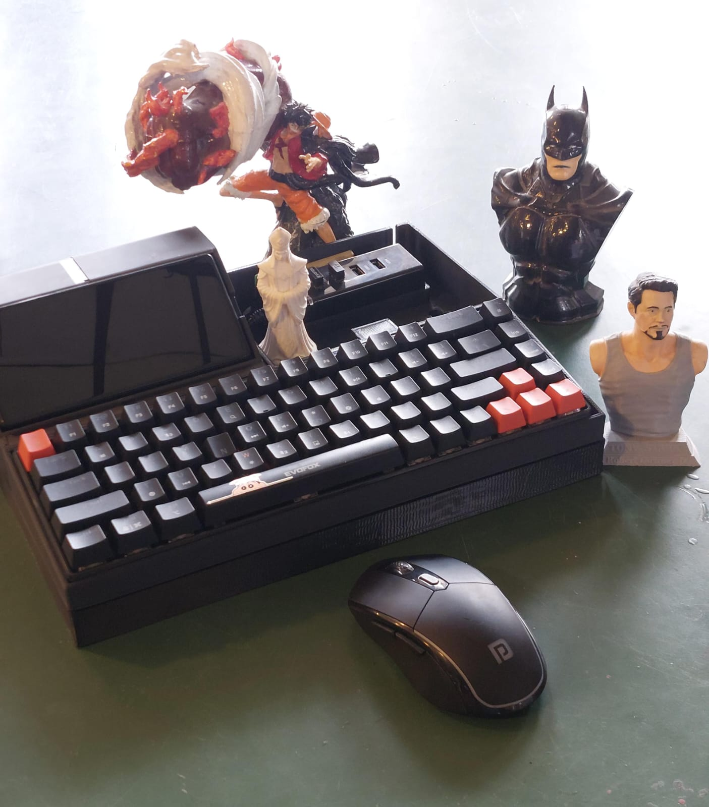

MK_01
REC // SYSTEM ACTIVE
ARCHIVE
Energy. Frequency. Vibration.
[ 01. CORE_SYSTEMS ]
MECHANICS
Physical linkages and precision topography. The violent kinetic transfer of power.
ELECTRONICS
Embedded architecture and PCB design. The central nervous system of the machine.
SOFTWARE
C, C++, and bare-metal logic. Writing the rules that bend silicon to will.
[ 02. ARTIFACTS ]

CYBERDECK_01
Custom computing rig. Retro-futuristic hardware meets terminal architecture.
SIGNAL LOST
EDC_MACHINE
Minimal phone engineered from scratch. Bespoke kernel, custom OS, bare-metal.